關於我
目前就讀於國立中山大學資訊管理學系碩士班，研究與學習重心聚焦於資訊系統分析、資料應用與科技驅動之管理決策。
大學期間主修數位內容科技，累積資訊應用、系統思維與跨領域實作基礎，並透過多項專題與競賽，培養將資訊技術轉化為實際商業與使用者價值的能力。在學期間曾擔任多項學生幹部，熟悉專案協作、溝通協調與時程管理；亦參與研究計畫與實務導向專案，結合資訊技術與情境需求進行問題分析與解決。整體而言，具備資訊技術理解力、商業思維與實務執行力，期望於實習中發揮資訊管理背景，協助組織提升數位應用與決策效率。
學歷
-
2025/9 ~ 至今國立中山大學
資訊管理學系 碩士（就讀中） -
2021/9 ~ 2025/6國立彰化師範大學
資訊管理學系 學士
專長
專業技能
資訊與資料應用
數位內容與互動
管理與商業基礎
語言能力
工作經歷
-
2026/7 ~ 現在Qnity(杜邦DuPont) - Process Analysis Engineer Intern (製成分析工程師 實習生)
1. Assist FE & BE teams with data analysis and dashboard development
2. Support data consolidation, visualization, and reporting activities
3. Help improve data transparency to support engineering and operational decision-making -
2026/2 ~ 2026/6國立中山大學 - 服務品質管理 課程助教
協助教師進行課程執行與教材整理，課程進度的安排，幫助學生解決課程上的問題。熟悉課程流程與系統操作說明，培養溝通協調與問題解決能力。
-
2025/9 ~ 2025/12國立中山大學 - 系統分析與設計 課程助教
協助教師進行課程執行與教材整理，支援學生軟硬體操作與問題排除。熟悉課程流程與系統操作說明，培養結構化說明與問題解決能力。
-
2024/9 ~ 2025/6國立彰化師範大學 - 通識課程助教
協助課程執行與教材整理，擔任教師與學生間的溝通橋梁。培養教學輔助、問題分析與學習成效回饋能力。
-
2023/2 ~ 2023/6夏恩英語學校 補習班 - 英語教師 / 助教
負責學習進度追蹤、教材準備與課程執行。透過教學規劃與成果評量，培養表達與溝通能力。
自傳
1. 關於我
我是許鉦偉，目前就讀於國立中山大學資訊管理學系碩士班，研究與學習重心聚焦於資訊系統、商業數據分析、資料庫、數位應用與科技專案實務。
我具備資訊管理與多媒體人機互動背景，並結合大學期間累積的數位內容與互動應用經驗，累積專案規劃、跨角色溝通與執行落地的實務經驗，能在技術、使用者需求與專案執行之間進行整合。在研究所階段，我期望透過實習，將理論與實務接軌，進一步累積產業導向的專案經驗與商業思維。
2. 大學課業表現
在大學課程中，不論是在資管領域或其他領域，團體報告或考試皆盡全力做到最好，積極參與討論，並能提出深思熟慮的問題，確保每堂課能理解和吸收知識。透過課堂報告與期末專題的磨練，我不僅累積了扎實的資訊管理基礎，更培養了邏輯思考與解決問題的能力。
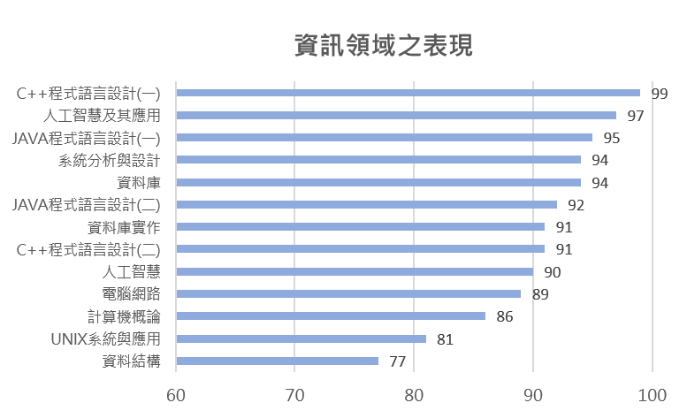
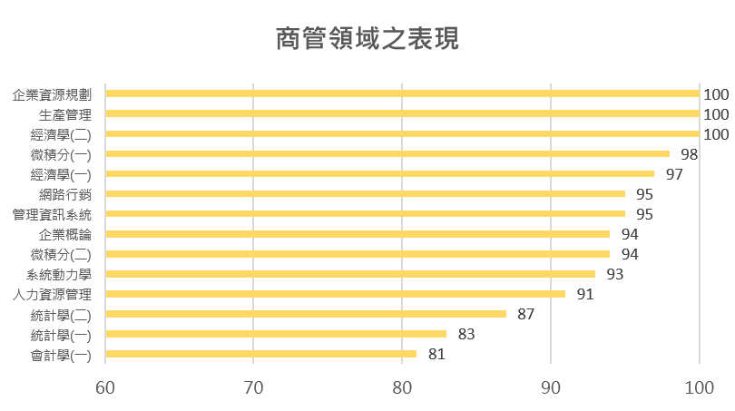
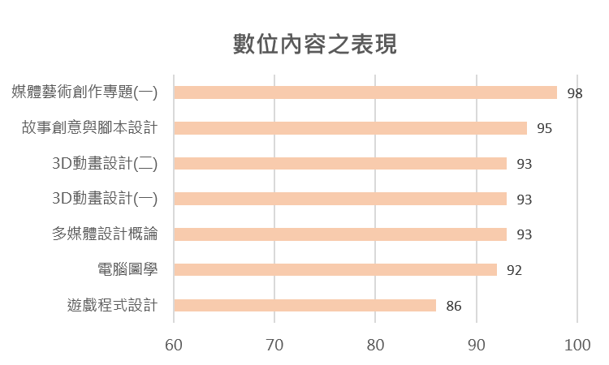
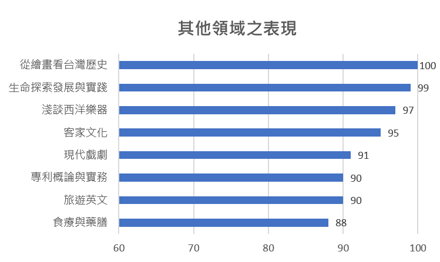
3. 人格特質與能力
積極對待生活中的任何事情，並自我要求高，持續精進自己，培養實力與競爭力。
在資訊爆炸的時代，懂得理性分析，衡量事物的利弊，做出合適的選擇。
負責
挑戰
好奇心
溝通協調
穩重
對於困難的挑戰，積極向上學習，勇於嘗試挫折，並從中學習，取得經驗。
求學階段，對於不同事情與話題，都感興趣，並加以探索並發掘新事物。
擔任活動、系學會幹部與課程助教相關工作等，擁有良好的溝通與協調能力，並建立信任關係。
4. 實務專案與實績
2026台積電智慧製造工作坊｜團體競賽第二名（獲頒 2.4 萬元企業獎金）｜專案組長
- 帶領 7 人團隊設計「Agent-driven 智慧診斷架構」與跨國永續政策，解決產線工程師每日耗時 3-4 小時 Debug 查因之痛點。
- 系統預估每日能為單一工程師節省 1-1.5 小時除錯時間（換算年省 36 萬營運成本）；專案因兼具技術深度與極高商業落地性，獲企業評審高度肯定。
因競賽表現優異，受邀至台積電廠區與工作區域進行參訪，深入觀摩半導體智慧製造產線運作、自動化機台物流與高科技工作環境，將軟體系統架構與半導體實務場景進行深度交流。
成大資料分析社 × 數據分析公司｜企業合作專案｜Power BI 負責人
- 清洗並整合獨立甜點品牌 2023-2026 年跨通路（實體門市、線上電商、團購等）共 8000+ 筆銷售資料，克服實體與線上資料格式差異，從零建構高可用性之數據基礎架構。
- 主導開發 Power BI 互動式決策儀表板，深度剖析季節趨勢與受眾行為，協助企業精準評估網紅與團購合作策略，預估提升 80% 的決策精準度與整體營運收益。
永豐 AI 投資組合分析方案｜104 人力銀行 × 永豐銀行 合作專案
- 實測與分析智能理財系統，精準洞察「介面僵化」與「黑盒子演算法」等核心體驗痛點。
- 企劃「AI 理財顧問解說介面」以提升決策透明度，並規劃「混合型顧問服務」，為企業提出具體提升資產管理規模之數位優化路徑。
國科會大專生研究計畫｜系統開發與研究負責人（獲國科會 4.8 萬元研究補助）
- 主導開發專為高齡者認知刺激設計的「XR 實境解謎互動遊戲」，負責 Unity 與 MAKAR 核心互動機制建置。
- 運用 SmartPLS 與 Excel 進行實驗數據分析，實證該系統能成功打破數位阻礙，將長者科技接受度由 20% 大幅躍升至 80%，並具顯著正向影響；研究成果正式發表於 2025 國際研討會。
畢業專題《時光樹語》｜沉浸式高齡者互動系統（獲校方 8,000 元專案開發補助）
- 負責 Unity 互動機制開發與 After Effects (AE) 3D 視覺動畫，打造高擬真沉浸式應用。
- 執行 UX 需求分析，系統成功引導 60-70% 長者回憶生命經驗，提升參與感與情感共鳴；專案從數千支隊伍中脫穎而出，入圍 2024 大專校院資訊應用服務創新競賽 (InnoServe) 全國決賽。
全國大專院校創意行銷競賽｜最佳數位應用獎
- 將互動數位體驗導入地方廟宇觀光情境，兼顧技術可行性與創意，預計能帶動 20-30% 年輕族群之社群參與。
校內 USR 社會專題競賽｜團隊召集人（獲頒 8,000 元競賽獎金）
- 統籌地方產業需求分析，整合網頁設計與多媒體技術，將在地特色轉化為具體數位行銷構想，熟悉從需求定義到方案落地的完整流程。
5. 未來展望
我熱愛結合電腦資訊、數位科技與創意的跨域應用，期望於 2026 暑期進入相關產業實習，投入商管或資訊相關實習職位，如專案管理、資訊系統、數據或數位應用相關團隊。透過實際參與專案執行，累積產業經驗，並為團隊帶來具體產出與價值。
未來希望能進一步提升自己在資訊應用、數位內容、人機互動與專案管理上的實力，參與更多能為公司帶來影響力的專案，並推動人性化且具溫度的科技應用。
6. 總結
我具備資訊背景、專案執行經驗與良好的溝通協調能力，始終保持學習與挑戰的熱忱，擅長跨領域整合，並善於傾聽與協作，能快速理解需求並投入實作。期待透過實習，深化商管與資訊整合能力，成為能與團隊共同成長的實習成員。面對快速變化的科技時代，我期許自己持續精進，創造更多具溫度與價值的科技應用。
專案作品
1. 成大資料分析社 × 澧曜數據分析公司｜企業合作專案生｜PowerBI負責人
1. 整合獨立甜點品牌 2023-2026 年跨通路（實體、線上、團購等）共 8,400+ 筆銷售資料，從零建構高可用性的數據管線。
2. 規劃並實作 Power BI 互動式 4 大決策儀表板，深度剖析季節趨勢與受眾行為，協助企業評估網紅合作策略，預估能提升 80% 的決策精準度與營運收益。
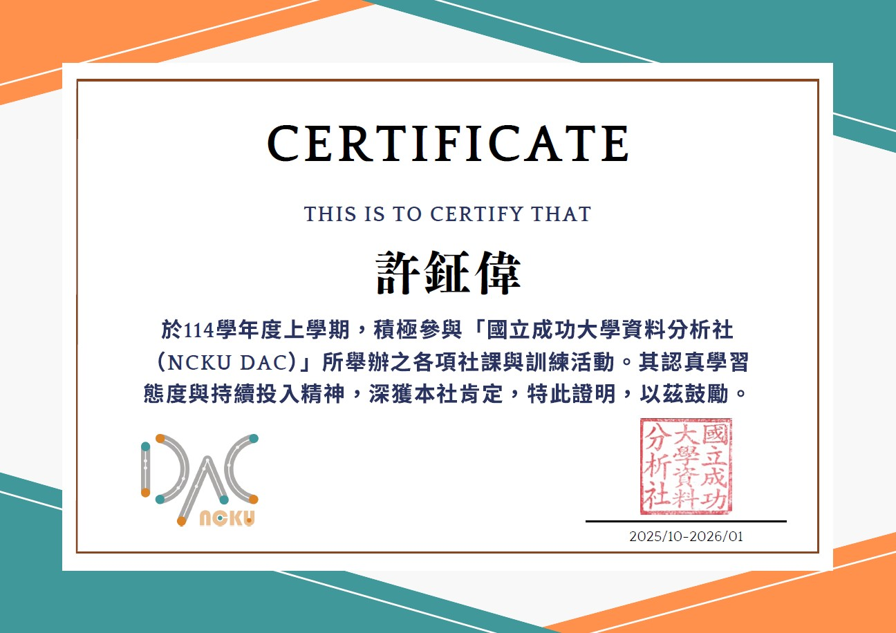
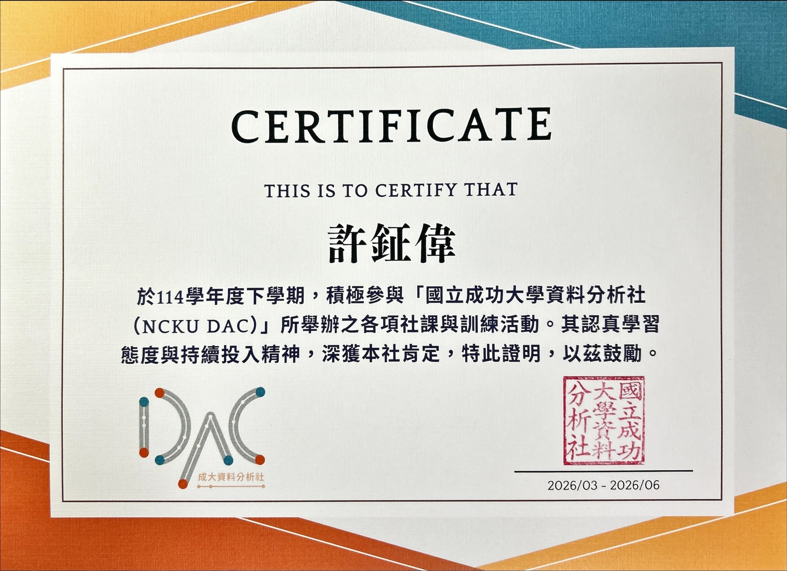
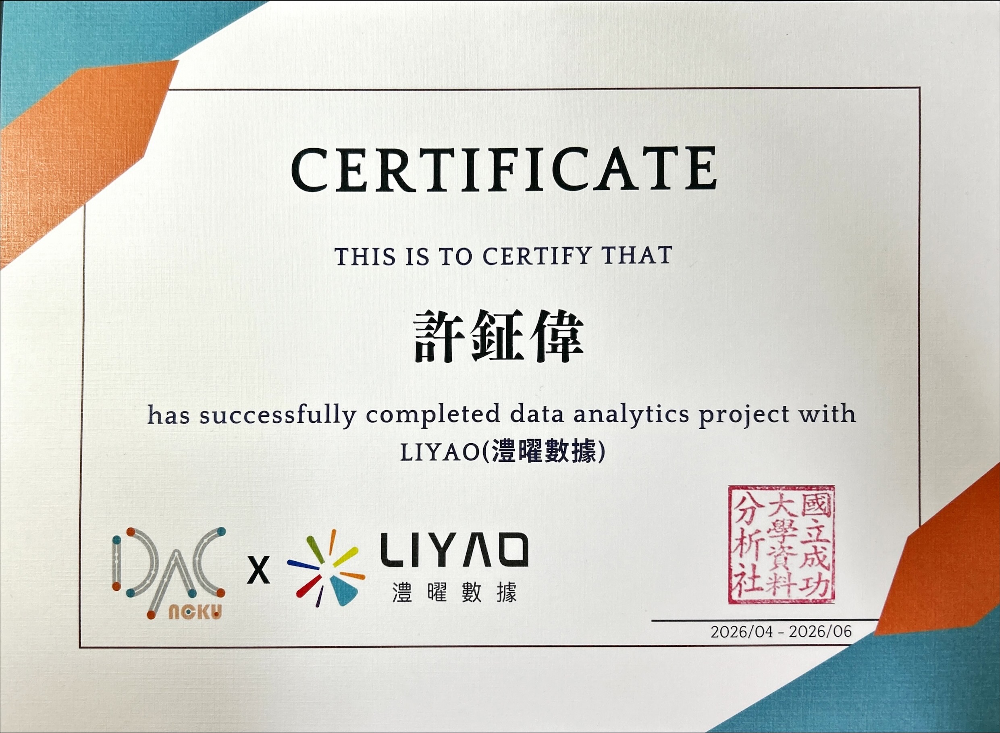
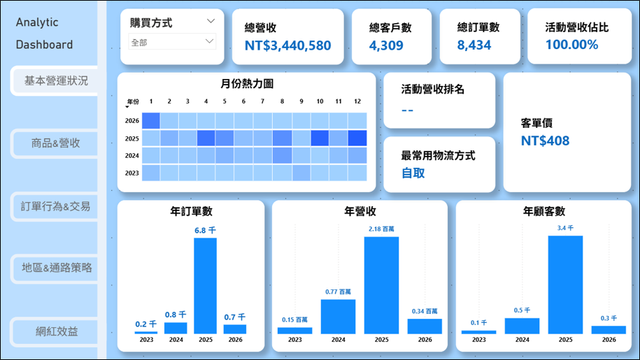
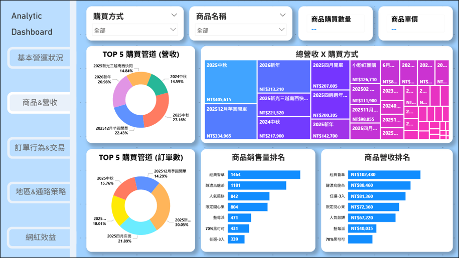
2. 永豐AI投資組合分析方案｜104人力銀行 X 永豐銀行 合作專案
專案名稱：永豐銀行 ibrAin 智能理財系統體驗優化與分析方案
(1) 專案背景與目標
本專案與永豐銀行合作，針對其智能理財機器人「ibrAin」進行深度產品體驗與分析。專案以虛擬數據設定目標客群（25 歲竹科軟體工程師，目標 5 年內存下 240 萬購屋頭期款），實際測試 ibrAin 的投資組合演算邏輯，並針對系統痛點提出具商業可行性的產品精進方案。
(2) 投資組合分析與現有痛點
經系統試算，針對 5 年期的中短期資金需求，ibrAin 建議了 35% 股票型（以美股 ETF 為主）與 65% 債券型（以美國短、中期公債為主）的穩健型投資組合。然而，在實際操作與競品分析中，發現現有系統存在以下痛點：
1. 輸入介面僵化缺乏彈性：系統的薪資與投入金額選項受限（如固定級距、首次投入金額門檻過高），無法真實貼近小資族的財務彈性需求。
2. 服務價值與收費不對等：系統收取 1% 的帳戶管理費，投資成本偏高，卻缺乏人性化的專屬理財服務。
3. 黑盒子演算法與策略僵化：過度依賴演算法模型，無法針對客戶人生階段改變而及時變更投資策略，且未向用戶解釋資產配置的背後邏輯。
(3) 產品改善與精進方案
為解決上述痛點，提升使用者體驗與產品轉換率，提出以下三大創新功能精進方案：
1. 提升系統輸入彈性與理財輔助功能：開放客製化的薪資與彈性首次投資金額填寫，降低使用門檻。新增理財分配建議功能，協助用戶釐清生活開銷與投資比例（如 60% 投資、30% 開銷、10% 彈性），並加入理財日誌功能，提供更完善的機制。
2. 導入「虛實整合」的混合型顧問服務：為彌補 1% 管理費帶來的服務落差，提供用戶申辦後享有兩次真人理財顧問服務。包含申辦前的一小時需求訪談，以及使用期間因應投資策略改變時的諮詢服務，強化人性化體驗。
3. 強化 AI 決策透明度與生態系整合：新增 AI 理財顧問介面，具體向用戶分析並解釋「為何採取此投資比例原則」，即時解答投資疑惑。將 ibrAin 系統與永豐既有的「投資水晶球」及「豐收學堂」進行深度整合，建立完整的金融教育與投資生態圈。
3. 國科會大專生研究計畫
計畫名稱：XR結合實境解謎互動遊戲應用於銀髮族認知刺激之探討｜指導教授：吳佩芬教授
(1) 研究目的
1. 設計一款適合銀髮族需求的 XR 實境解謎互動遊戲，融合多元訓練元素，難易度由淺入深且具趣味性。
2. 透過簡潔介面與操作說明，提高銀髮族對 XR 技術的接受度與參與意願。
3. 評估遊戲對提升認知能力及延緩認知衰退的潛力。
(2) 研究方法
本研究採用文獻分析、訪談及問卷調查法，根據文獻資料和銀髮族訪談的內容設計實境遊戲，並將 XR 技術導入遊戲中，並迭代遊戲測試及設計修正，再設計使用者問卷並在體驗前與體驗後做調查，最後分析成果並提出結論與建議。
(3) 實驗設計
本XR實境解謎遊戲名稱為「憶起美好」。六個關卡分別為：第一關「過目不忘」為專注力與記憶力訓練，銀髮族需先記住畫面所有出現過的水果，後續會有水果消失，接著選出不見的水果名稱；第二關「懷舊歌曲」為記憶力訓練，以懷舊歌曲為主的猜歌遊戲，聽完音樂後，會出現三首歌曲名稱選項，選出正確的歌名；第三關「神機妙算」為運算能力訓練，依據畫面上的數字與數學符號，完成四則運算；第四關「回憶日常」為記憶力與邏輯力訓練，畫面會先出現2-5張卡牌，牌裡出現日常生活用品的圖案，之後蓋住卡牌3秒，接著翻開卡牌，找出與原先不同的卡牌；第五關「烤雞蛋糕」為注意力與空間感訓練，需思考當烤盤翻面時，雞蛋糕會出現的位置(翻面前至翻面後的鏡射位置)，並在畫面中點選出正確的對應位置；第六關「過年吉祥話」為記憶力與認知訓練，需選出有關題目上對應有過年意涵的吉祥話。每關遊戲皆有時間限制，於體驗後得到相對應的分數與題數，並請銀髮族圈選出每關遊戲的難易度，以作為訪談與問卷調查之參考。
(4) 實驗成果
透過實驗設計與實測分析，結果顯示約 70–80% 高齡者能順利操作並接受所設計之互動遊戲，且對專注力與認知刺激具顯著正向影響。
(5) 總結
綜合數據分析與訪談回饋，本研究設計的 XR 實境解謎互動遊戲有效提升銀髮族的科技接受度。SmartPLS 分析顯示，認知有用性對愉悅感具有顯著影響，而認知易用性則強烈影響可玩性。
投稿至 2025 年跨域創新設計整合國際研討會，經評審審核獲得正式發表。
4. 時光樹語｜沉浸式互動體驗
專題名稱：應用於銀髮族之沉浸式互動體驗｜指導教授：吳佩芬教授
概要說明：本專題將設計一款為高齡者的沉浸式互動體驗，結合與高齡者喜愛的休閒活動，將互動投影技術導入體驗中，並與雲科大數媒中心合作，透過三面牆環繞的沉浸式體驗及簡單的互動操作，滿足其對互動體驗的需求，並增加接觸科技之機會，期望能療癒高齡者的身心靈，放鬆心情以減少負面情緒。
代表本系畢業專題參與 2024 大專校院資訊應用服務創新競賽決賽
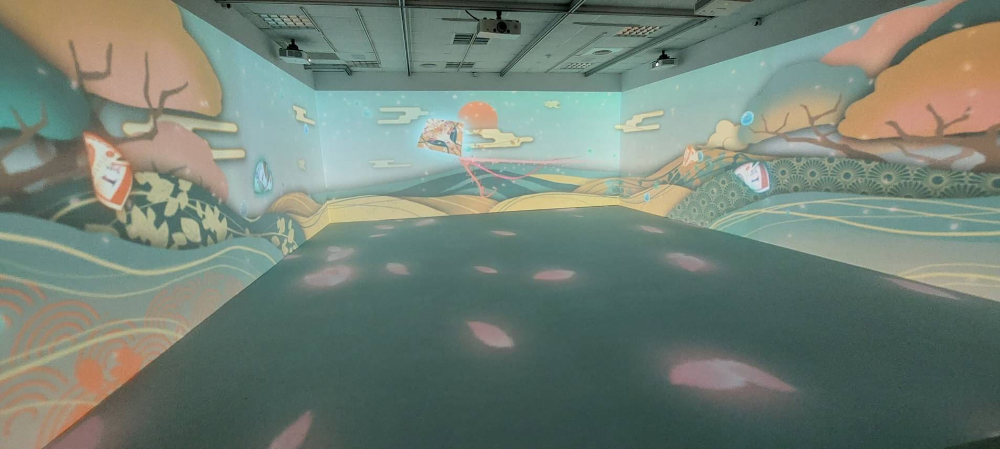
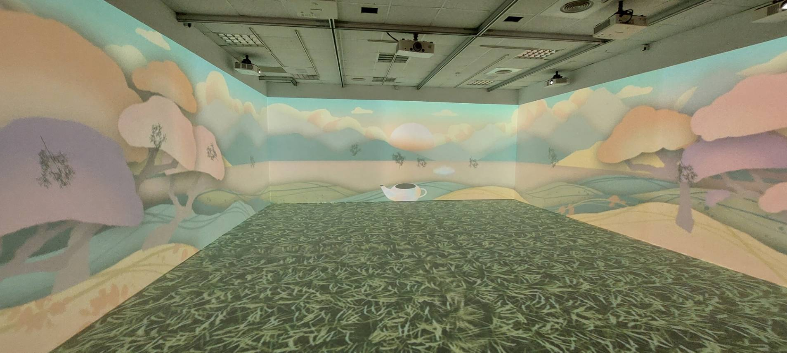
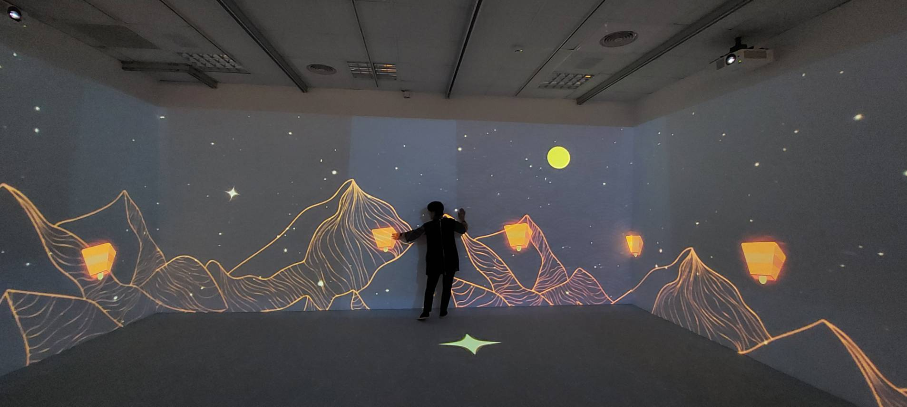
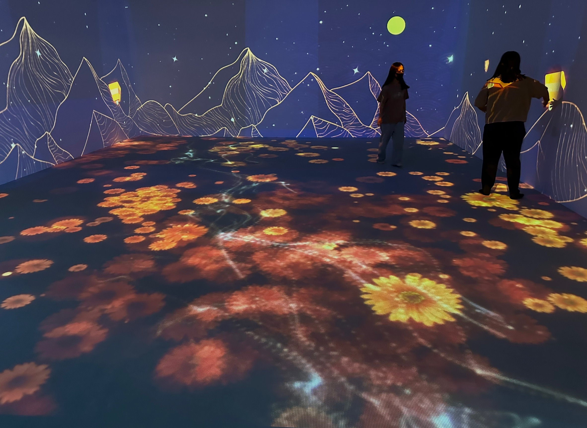
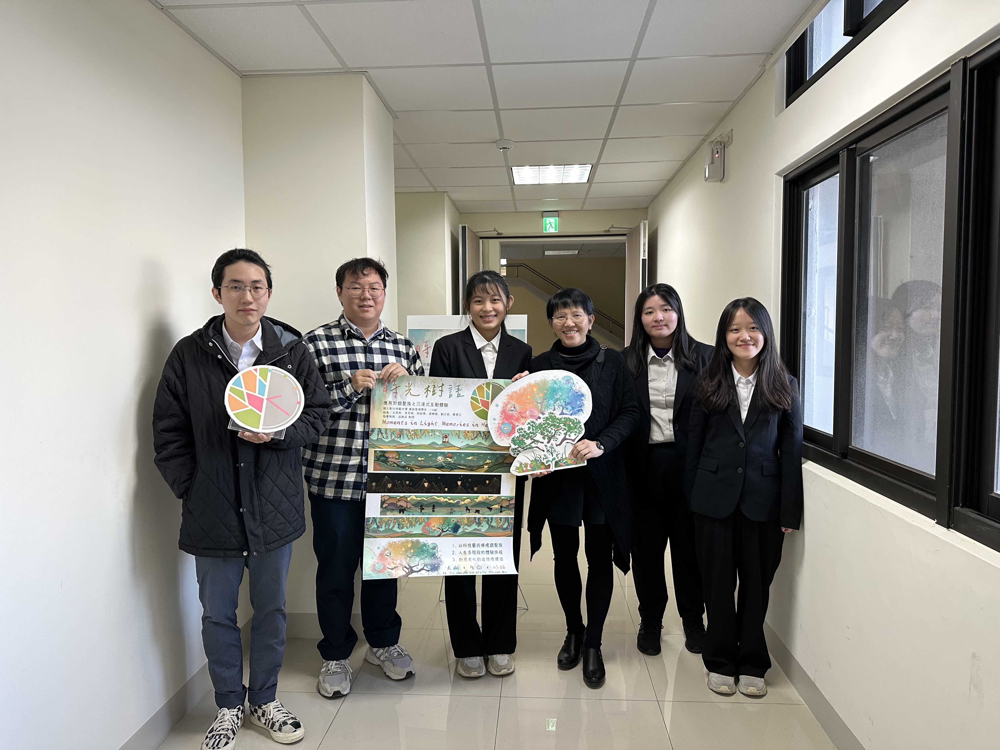
競賽經驗
1. 2026台積電智慧製造工作坊｜團體賽第二名（獲頒 2.4 萬元獎金）｜專案組長
在參與2026 台積電智慧製造工作坊期間，我擔任組長並帶領 7 人團隊，針對產線工程師每日大量 debug 與查因流程進行分析，提出「 Agent-driven 智慧診斷架構」作為改善方案。專案整合 AI Agent、知識管理與智慧診斷概念，協助工程人員快速定位問題來源，預估每日可 節省約 1 - 1.5 小時除錯時間，換算單人每年可降低約 36 萬元成本 ，最終榮獲團體競賽第二名。
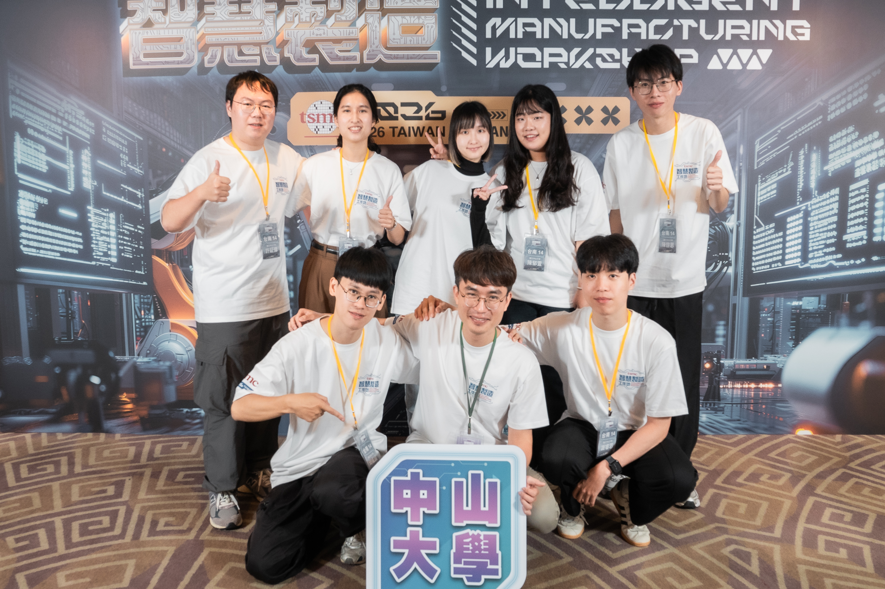
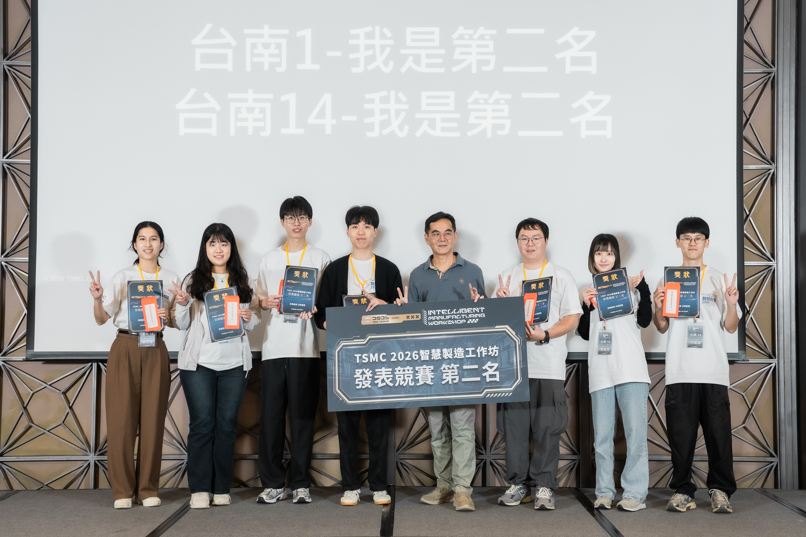
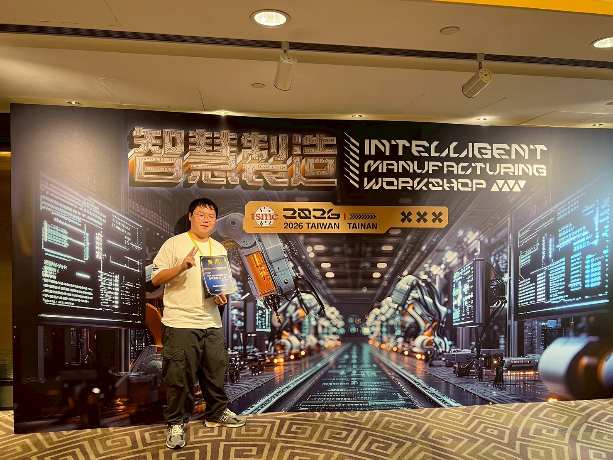
2. 校內 USR 社會專題競賽|第二名
擔任團隊召集人，負責問題分析與企劃整合。我們針對在地社會議題提出「網頁設計結合多媒體應用」的解決方案，成功將構想轉化為具體視覺成果，並獲得評審青睞。
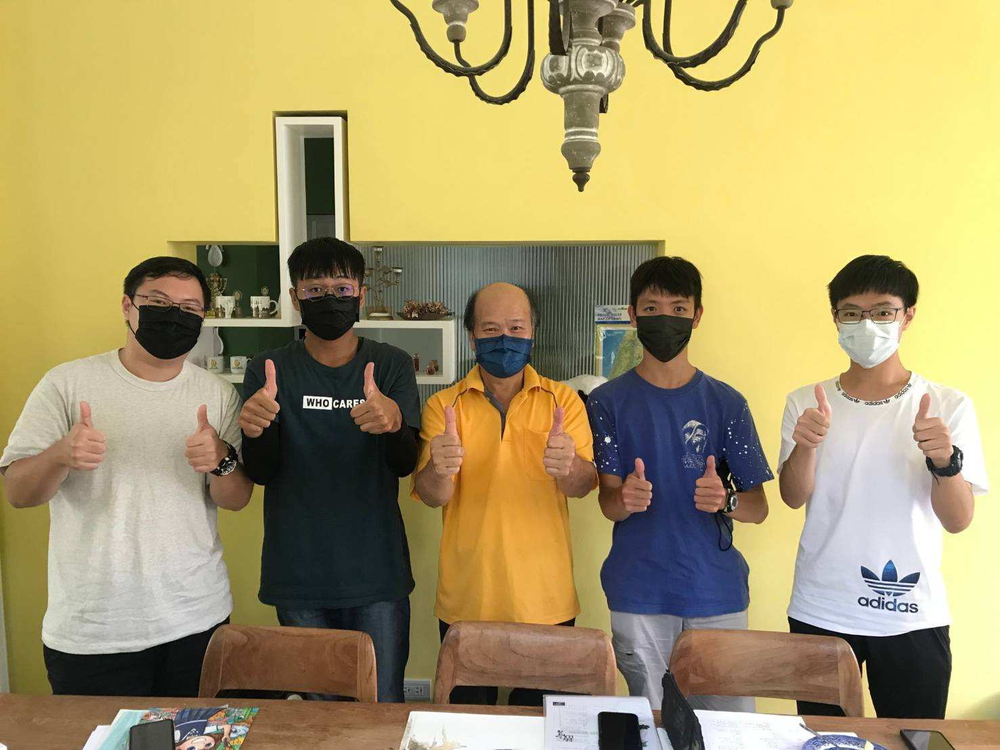
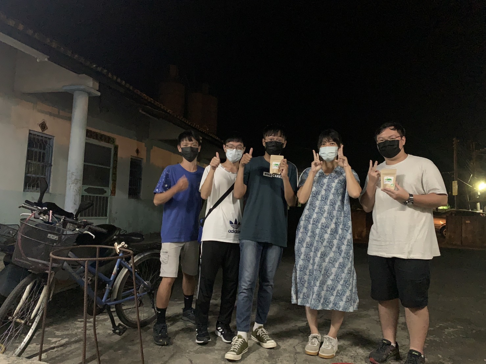
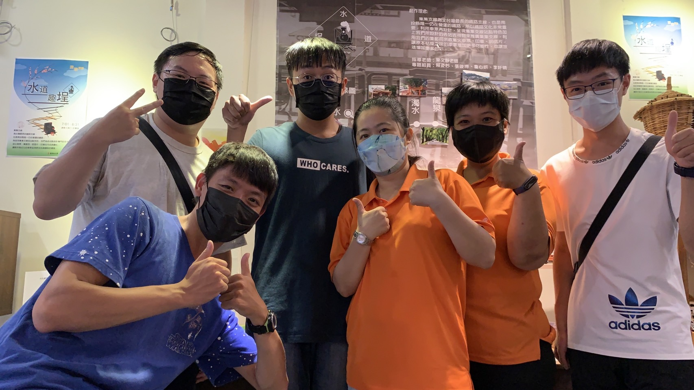
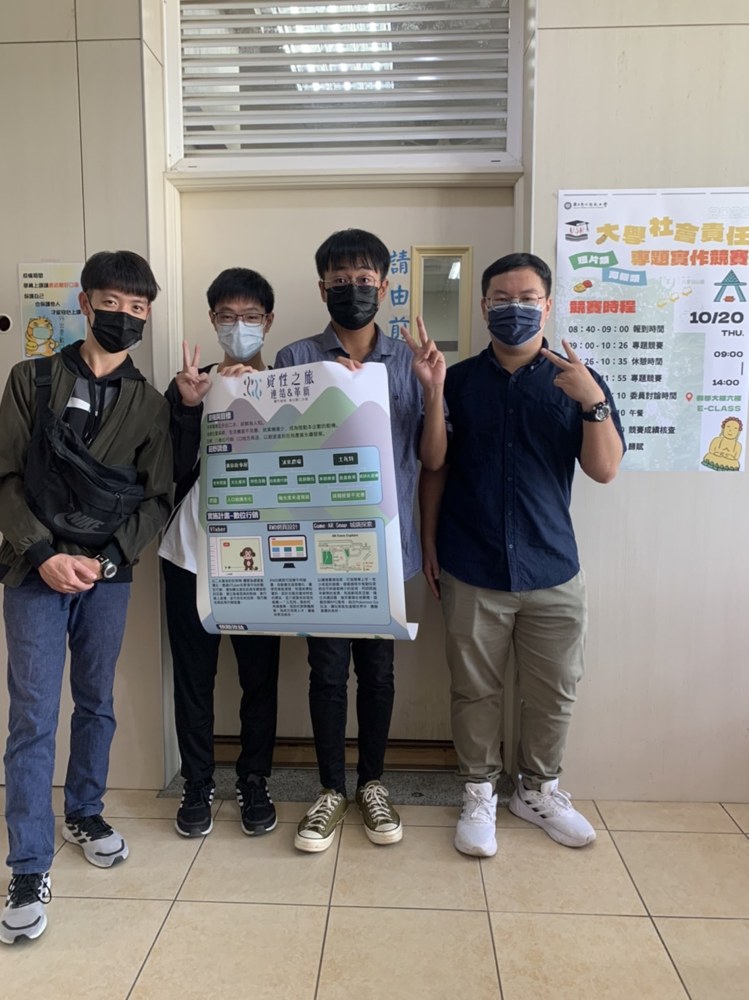


3. 全國大專創意行銷競賽|最佳數位應用獎
負責數位互動應用的企劃發想，提出將文化元素轉譯為年輕族群喜愛的互動體驗。在商業目標與技術可行性之間取得平衡，最終獲得最佳數位應用獎項肯定。
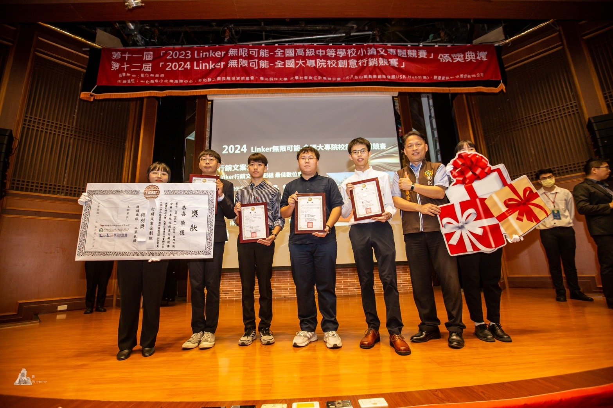
4. 入圍 2024 大專校院資訊應用服務創新競賽決賽
專案旨在解決高齡族群的認知與互動需求，我負責互動流程設計與 3D 視覺整合，運用 After Effects (AE) 製作動畫，並結合 Unity 進行互動機制的程式開發 為了讓科技更貼近長者，深入進行使用者體驗 (UX) 分析，將高齡者熟悉的生命經驗元素融入系統，設計出符合其使用習慣的直覺操作。本專案不僅達成預期目標，更代表系所成功入圍 2024 大專校院資訊應用服務創新競賽 (InnoServe) 全國決賽 。


學習內容
其他相關證明
以下為相關證書與認證：
- 證書或認證項目 1
- 證書或認證項目 2
- 證書或認證項目 3